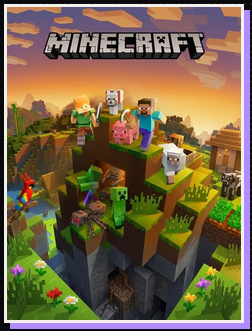

Jogo de navegador · Minecraft 1.8.8
Minecraft
Explore, construa e sobreviva em mundos de blocos diretamente no navegador. Esta versão de Minecraft 1.8.8 roda por meio do EaglercraftX com WebAssembly, e seus mundos ficam salvos no próprio dispositivo.
Para uma melhor experiência, jogue em um computador com teclado e mouse e use um navegador atualizado com suporte a WebGL 2.0.
Jogar no WASM Arcade